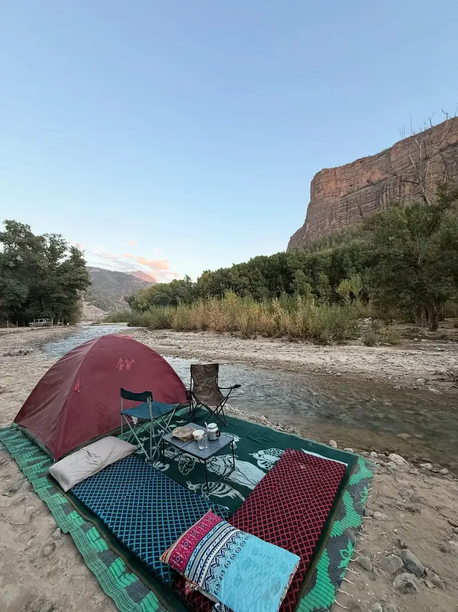

Jebel Imsfrane – The Cathedral of the Atlas
25 February 2026
Jebel Imsfrane rises to an altitude of 1,868 metres and dominates the surrounding valleys. Its distinctive rock formation has earned it the name “The Cathedral.”
The mountain is surrounded by forests, rivers, waterfalls and traditional villages. Hiking to the summit offers panoramic views over Oued Ahansal and the High Atlas.